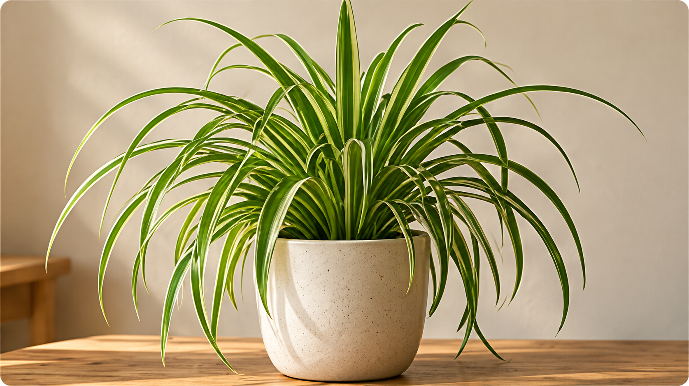
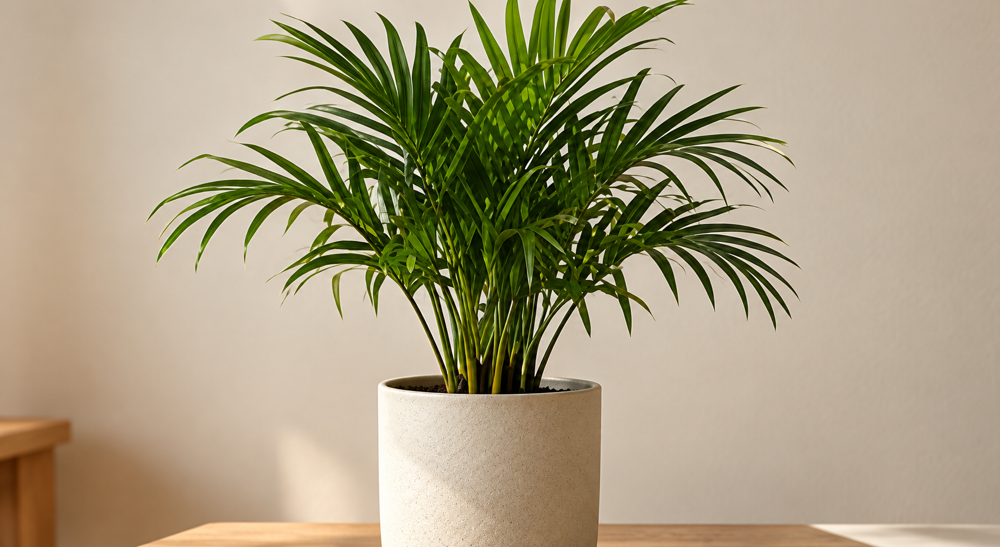

1Vælg en placering
Find et sted, hvor din plante kan stå, og læg mærke til lyset i løbet af dagen
Nogle planter er mere tilgivende end andre.
Find først en placering, se på lyset, og vælg derefter en plante, der passer til forholdene i dit hjem.
Find et sted, hvor din plante kan stå, og læg mærke til lyset i løbet af dagen
Rammes stedet af solens stråler, er der direkte sol. Er stedet lyst uden direkte sol, er der indirekte lys.
Læs plantekortene nedenfor, og vælg en plante, hvis lysbehov passer til placeringen.

En robust og nem plante, der trives i de fleste hjem. Den tåler lidt tørke og er et godt valg, hvis du er ny med stueplanter.
Læs om planten
En stærk og nem plante, der trives i normalt indendørs lys. Den kræver ikke meget og passer godt til en travl hverdag.
Læs om planten